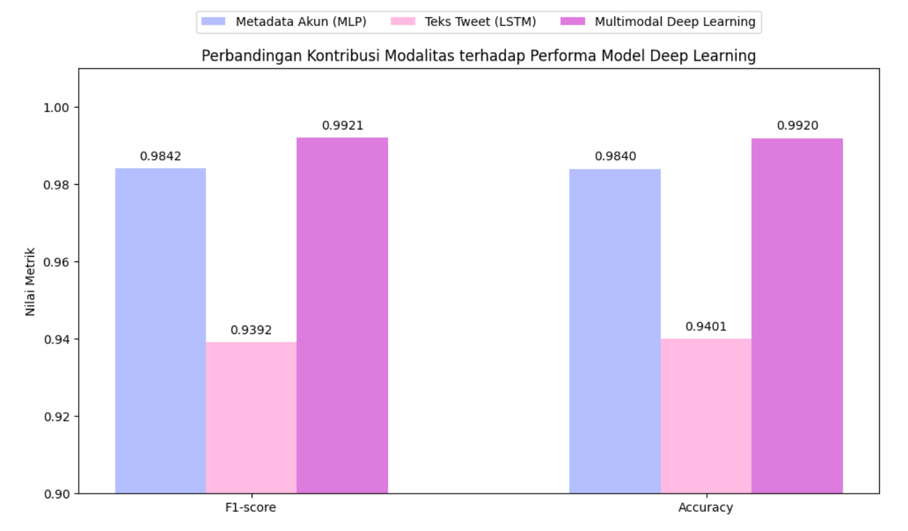
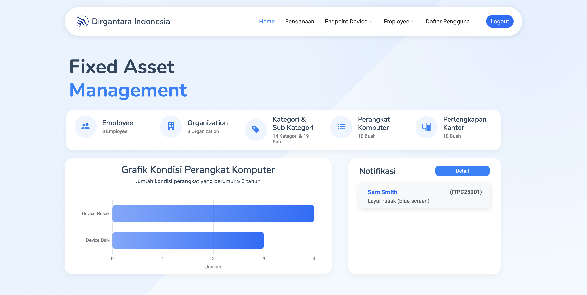
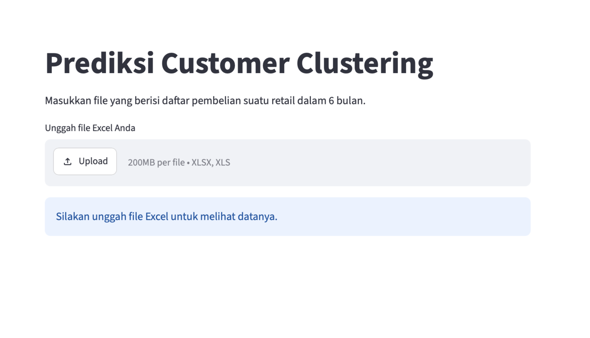
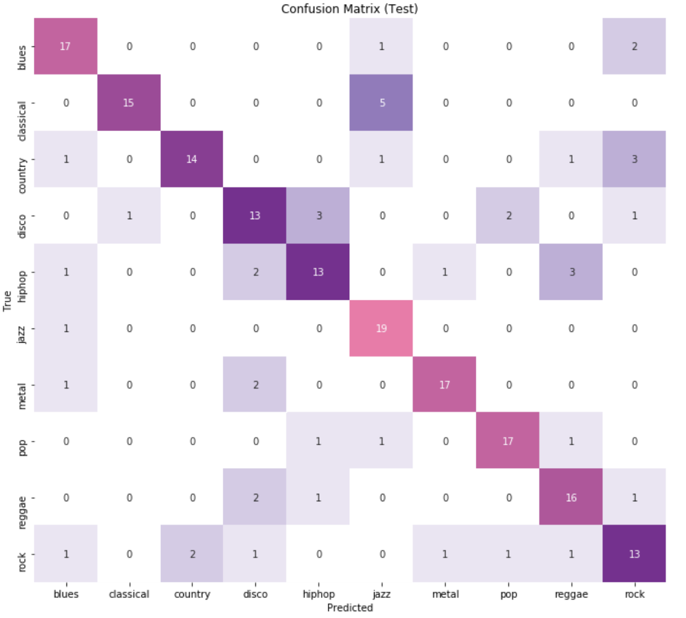
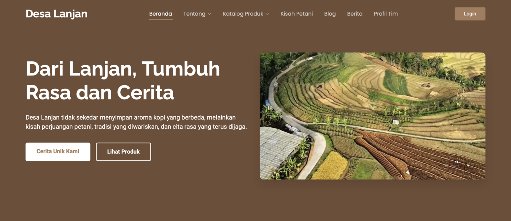

An Informatics Graduate from Universitas Diponegoro
I'm an Informatics graduate from Diponegoro University with a strong interest in Artificial Intelligence, Data Science, Web Development, and Software Engineering.
I've worked on AI/ML projects, full-stack web applications, and data-driven solutions, while also gaining experience in programming, database design, and system modeling. Beyond technical skills, I also enjoy collaborating with teams, leading organization projects, and solving real-world problems.
Currently I'm open to opportunities in AI/ML, Data Science, Software Engineering, and IT roles such as System or Business Analyst.





I'm always excited to discuss new ideas, build meaningful products, and collaborate with great people. Whether it's AI, software development, or something in between, let's connect.